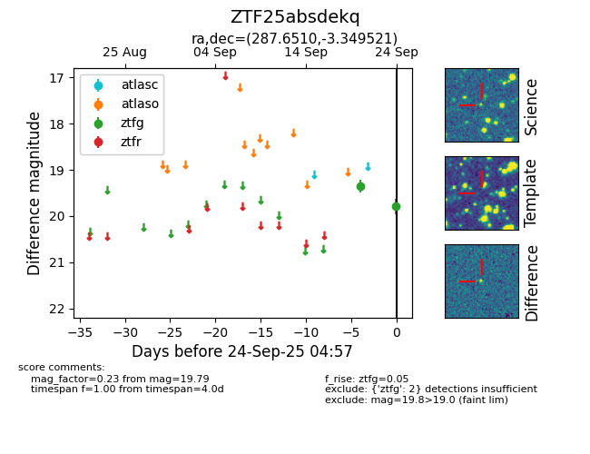

FINK: ZTF25absdekq
Lasair: ZTF25absdekq
ALeRCE: ZTF25absdekq
ZTF25absdekq (ztf,fink)
equatorial (ra, dec) = (287.6510,-3.34952)
galactic (l, b) = (32.1270,-5.78842)

last ztfg=19.79
2 ztfg detections